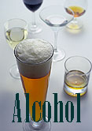

|
In the last decade, Ireland has seen many changes which have influenced the context and nature of drinking and increased alcohol related harm. Against the backdrop of the fastest growing economy in Europe, Ireland has had the highest increases in alcohol consumption among EU countries. |  |